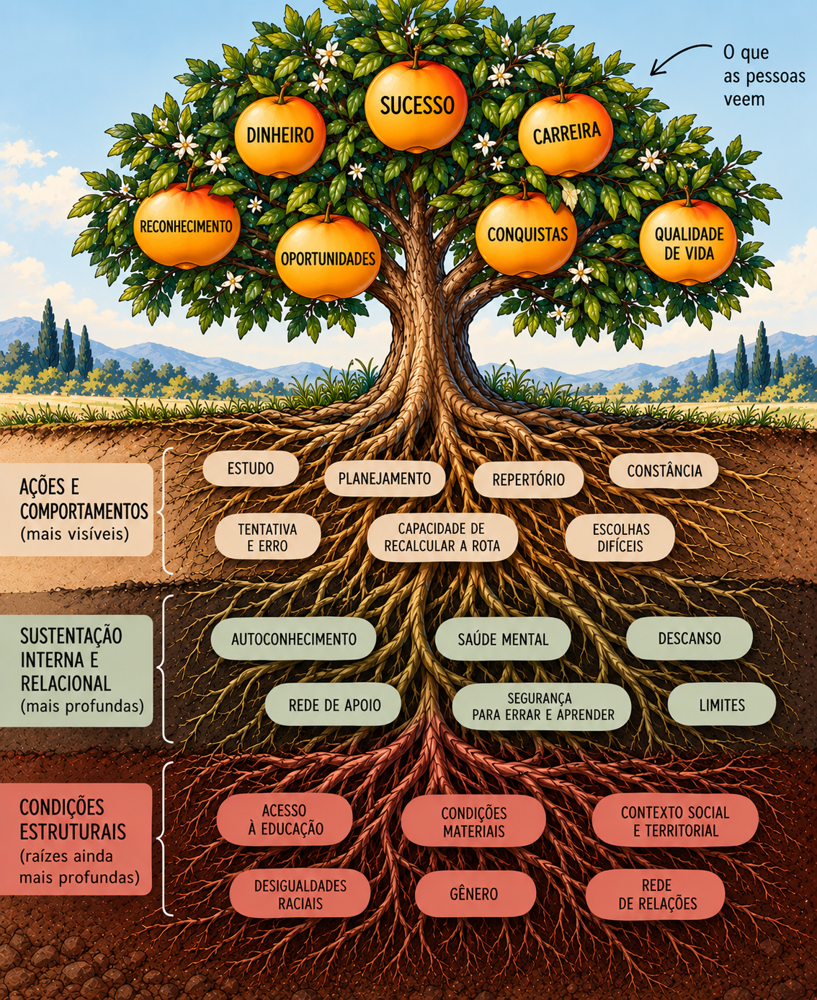

Sucesso não nasce apenas do esforço: as raízes invisíveis das oportunidades
O que você vê: “sorte”. O que você não vê: uma história pessoal, relacional e social sustentando aquele resultado.

Encontrei no LinkedIn uma ilustração que me chamou atenção. Era uma árvore: nos frutos, a palavra “sorte”; nas raízes, estudo, planejamento, conhecimento, perseverança, tentativa e erro e até noites mal dormidas.
Gostei da metáfora. Mas alguma coisa nela me incomodou.
Quando mostramos apenas essas raízes, podemos dar a entender que os resultados de uma pessoa dependem exclusivamente do quanto ela estudou, planejou ou persistiu. Há raízes ainda mais profundas, que nem sempre aparecem na imagem.
Antes do estudo, existe acesso à educação. Antes de certas escolhas, existem condições materiais para poder escolher. Antes de errar e tentar novamente, existe a possibilidade — ou não — de suportar as consequências daquele erro.
Os dados ajudam a enxergar essa parte da árvore. Segundo o IBGE, em 2024, o rendimento médio das pessoas brancas era 65,9% maior que o das pessoas pretas ou pardas. A diferença não descreve a capacidade de cada indivíduo; mostra que as oportunidades e os resultados também são atravessados por desigualdades raciais.1
O tempo disponível também não é distribuído igualmente. O IBGE registrou que as mulheres dedicavam, em média, 10,4 horas semanais a mais que os homens aos afazeres domésticos e ao cuidado de pessoas. É tempo que pode faltar para estudar, descansar, buscar oportunidades ou desenvolver um projeto próprio.2
Como psicóloga que transita entre a clínica e a Psicologia Organizacional e do Trabalho, seria difícil olhar para essa árvore sem acrescentar essas raízes. Saúde mental, rede de apoio, segurança para aprender, condições de trabalho, gênero, raça e contexto social e territorial também fazem parte das trajetórias.
Reconhecer isso não diminui o valor do esforço nem significa dizer a quem enfrenta condições desfavoráveis que não vale a pena tentar. Significa compreender melhor o que torna uma tentativa possível — e evitar que toda a responsabilidade por um resultado recaia sobre uma única pessoa.
Nas organizações, essa reflexão pode começar com perguntas concretas: quem recebe oportunidades de aprendizagem? Quem tem tempo, apoio e segurança para experimentar? Quem é reconhecido pelo que faz? Quem precisa superar obstáculos adicionais para chegar ao mesmo lugar?
Talvez, diante de uma conquista, a pergunta não seja apenas “quanto essa pessoa se esforçou?”. Podemos perguntar também: “de que solo ela precisou partir?”
Nem todo mundo começa do mesmo lugar. Reconhecer isso não diminui as conquistas; amplia nossa compreensão sobre elas.